Dow Theory: Introduction
Any attempt to trace the origins of technical analysis would inevitably lead to Dow theory. While more than 100 years old, Dow theory remains the foundation of much of what we know today as technical analysis.
Dow theory was formulated from a series of Wall Street Journal editorials authored by Charles H. Dow from 1900 until the time of his death in 1902. These editorials reflected Dow's beliefs on how the stock market behaved and how the market could be used to measure the health of the business environment.
Due to his death, Dow never published his complete theory on the markets, but several followers and associates have published works that have expanded on the editorials. Some of the most important contributions to Dow theory were William P. Hamilton's "The Stock Market Barometer" (1922), Robert Rhea's "The Dow Theory" (1932), E. George Schaefer's "How I Helped More Than 10,000 Investors To Profit In Stocks" (1960) and Richard Russell's "The Dow Theory Today" (1961).
Dow believed that the stock market as a whole was a reliable measure of overall business conditions within the economy and that by analyzing the overall market, one could accurately gauge those conditions and identify the direction of major market trends and the likely direction of individual stocks.
Dow first used his theory to create the Dow Jones Industrial Index and the Dow Jones Rail Index (now Transportation Index), which were originally compiled by Dow for The Wall Street Journal. Dow created these indexes because he felt they were an accurate reflection of the business conditions within the economy because they covered two major economic segments: industrial and rail (transportation). While these indexes have changed over the last 100 years, the theory still applies to current market indexes.
Much of what we know today as technical analysis has its roots in Dow's work. For this reason, all traders using technical analysis should get to know the six basic tenets of Dow theory. Let's explore them.
(To read more, check out The Basics Of Technical Analysis.)
Dow Theory: The Market Discounts Everything
The first basic premise of Dow theory suggests that all information - past, current and even future - is discounted into the markets and reflected in the prices of stocks and indexes.
That information includes everything from the emotions of investors to inflation and interest-rate data, along with pending earnings announcements to be made by companies after the close. Based on this tenet, the only information excluded is that which is unknowable, such as a massive earthquake. But even then the risks of such an event are priced into the market.
It's important to note that this is not to suggest that market participants, or even the market itself, are all knowing, with the ability to predict future events. Rather, it means that over any period of time, all factors - those that have happened, are expected to happen and could happen - are priced into the market. As things change, such as market risks, the market adjusts along with the prices, reflecting that new information.
The idea that the market discounts everything is not new to technical traders, as this is a major premise of many of the tools used in this field of study. Accordingly, in technical analysis one need only look at price movements, and not at other factors such as the balance sheet. (For more on this, see The Basics Of Technical Analysis.)
Like mainstream technical analysis, Dow theory is mainly focused on price. However, the two differ in that Dow theory is concerned with the movements of the broad markets, rather than specific securities.
For example, a follower of Dow theory will look at the price movement of the major market indexes. Once they have an idea of the prevailing trend in the market, they will make an investment decision. If the prevailing trend is upward, it follows that an investor would buy individual stocks trading at a fair valuation. This is where a broad understanding of the fundamental factors that affect a company can be helpful.
It's important to note that while Dow theory itself is focused on price movements and index trends, implementation can also incorporate elements of fundamental analysis, including value- and fundamental-oriented strategies.
Having said that, Dow theory is much more suited to technical analysis.
Dow Theory: The Three-Trend Market
An important part of Dow theory is distinguishing the overall direction of the market. To do this, the theory uses trend analysis.
Before we can get into the specifics of Dow theory trend analysis, we need to understand trends. First, it's important to note that while the market tends to move in a general direction, or trend, it doesn't do so in a straight line. The market will rally up to a high (peak) and then sell off to a low (trough), but will generally move in one direction. (For related reading, see Peak-and-Trough Analysis.)
| 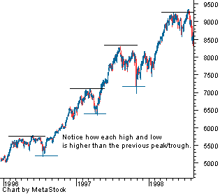 |
| Figure 1: an uptrend |
{kind=link}
An upward trend is broken up into several rallies, where each rally has a high and a low. For a market to be considered in an uptrend, each peak in the rally must reach a higher level than the previous rally's peak, and each low in the rally must be higher than the previous rally's low.
A downward trend is broken up into several sell-offs, in which each sell-off also has a high and a low. To be considered a downtrend in Dow terms, each new low in the sell-off must be lower than the previous sell-off's low and the peak in the sell-off must be lower then the peak in the previous sell-off.
| 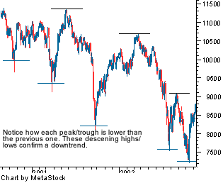 |
| Figure 2: a downtrend |
{kind=link}
Now that we understand how Dow theory defines a trend, we can look at the finer points of trend analysis.
Dow theory identifies three trends within the market: primary, secondary and minor. A primary trend is the largest trend lasting for more then a year, while a secondary trend is an intermediate trend that lasts three weeks to three months and is often associated with a movement against the primary trend. Finally, the minor trend often lasts less than three weeks and is associated with the movements in the intermediate trend.
Let us now take a look at each trend.
Primary Trend
In Dow theory, the primary trend is the major trend of the market, which makes it the most important one to determine. This is because the overriding trend is the one that affects the movements in stock prices. The primary trend will also impact the secondary and minor trends within the market. (For related reading, see Short-, Intermediate- and Long-Term Trends.)
Dow determined that a primary trend will generally last between one and three years but could vary in some instances.
| 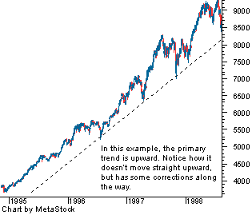 |
| Figure 3: an uptrend with corrections |
{kind=link}
Regardless of trend length, the primary trend remains in effect until there is a confirmed reversal. (For more insight, see Retracement Or Reversal: Know The Difference and Support And Resistance Reversals.)
For example, if in an uptrend the price closes below the low of a previously established trough, it could be a sign that the market is headed lower, and not higher.
When reviewing trends, one of the most difficult things to determine is how long the price movement within a primary trend will last before it reverses. The most important aspect is to identify the direction of this trend and to trade with it, and not against it, until the weight of evidence suggests that the primary trend has reversed.
Secondary, or Intermediate, Trend
In Dow theory, a primary trend is the main direction in which the market is moving. Conversely, a secondary trend moves in the opposite direction of the primary trend, or as a correction to the primary trend.
For example, an upward primary trend will be composed of secondary downward trends. This is the movement from a consecutively higher high to a consecutively lower high. In a primary downward trend the secondary trend will be an upward move, or a rally. This is the movement from a consecutively lower low to a consecutively higher low.
Below is an illustration of a secondary trend within a primary uptrend. Notice how the short-term highs (shown by the horizontal lines) fail to create successively higher peaks, suggesting that a short-term downtrend is present. Since the retracement does not fall below the October low, traders would use this to confirm the validity of the correction within a primary uptrend.
| 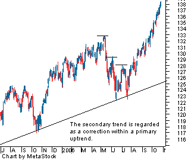 |
| Figure 4: a secondary trend w/ a primary uptrend |
{kind=link}
In general, a secondary, or intermediate, trend typically lasts between three weeks and three months, while the retracement of the secondary trend generally ranges between one-third to two-thirds of the primary trend's movement. For example, if the primary upward trend moved the DJIA from 10,000 to 12,500 (2,500 points), the secondary trend would be expected to send the DJIA down at least 833 points (one-third of 2,500).
Another important characteristic of a secondary trend is that its moves are often more volatile than those of the primary move.
Minor Trend
The last of the three trend types in Dow theory is the minor trend, which is defined as a market movement lasting less than three weeks. The minor trend is generally the corrective moves within a secondary move, or those moves that go against the direction of the secondary trend.
| 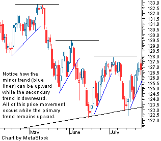 |
| Figure 5 |
{kind=link}
Due to its short-term nature and the longer-term focus of Dow theory, the minor trend is not of major concern to Dow theory followers. But this doesn't mean it is completely irrelevant; the minor trend is watched with the large picture in mind, as these short-term price movements are a part of both the primary and secondary trends.
Most proponents of Dow theory focus their attention on the primary and secondary trends, as minor trends tend to include a considerable amount of noise. If too much focus is placed on minor trends, it can to lead to irrational trading, as traders get distracted by short-term volatility and lose sight of the bigger picture.
Stated simply, the greater the time period a trend comprises, the more important the trend.
Dow Theory: The Three Phases Of Primary Trends
Since the most vital trend to understand is the primary trend, this leads into the third tenet of Dow theory, which states that there are three phases to every primary trend – the accumulation phase (distribution phase), the public participation phase and a panic phase (excess phase).
Let us now take a look at each of the three phases as they apply to both bull and bear markets.
Primary Upward Trend (Bull Market)
The Accumulation Phase
The first stage of a bull market is referred to as the accumulation phase, which is the start of the upward trend. This is also considered the point at which informed investors start to enter the market.
The accumulation phase typically comes at the end of a downtrend, when everything is seemingly at its worst. But this is also the time when the price of the market is at its most attractive level because by this point most of the bad news is priced into the market, thereby limiting downside risk and offering attractive valuations.
However, the accumulation phase can be the most difficult one to spot because it comes at the end of a downward move, which could be nothing more than a secondary move in a primary downward trend - instead of being the start of a new uptrend. This phase will also be characterized by persistent market pessimism, with many investors thinking things will only get worse.
From a more technical standpoint, the start of the accumulation phase will be marked by a period of price consolidation in the market. This occurs when the downtrend starts to flatten out, as selling pressure starts to dissipate. The mid-to-latter stages of the accumulation phase will see the price of the market start to move higher. (For related reading, see Consolidation - Trade The Calm, Profit From The Storm.)
| 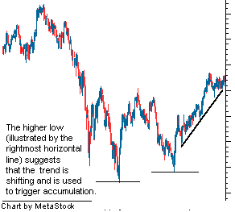 |
| Figure 1: the accumulation phase |
{kind=link}
A new upward trend will be confirmed when the market doesn't move to a consecutively lower low and high.
Public Participation Phase
When informed investors entered the market during the accumulation phase, they did so with the assumption that the worst was over and a recovery lay ahead. As this starts to materialize, the new primary trend moves into what is known as the public participation phase.
During this phase, negative sentiment starts to dissipate as business conditions - marked by earnings growth and strong economic data - improve. As the good news starts to permeate the market, more and more investors move back in, sending prices higher.
This phase tends not only to be the longest lasting, but also the one with the largest price movement. It's also the phase in which most technical and trend traders start to take long positions, as the new upward primary trend has confirmed itself - a sign these participants have waited for.
| 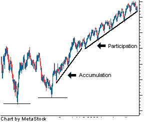 |
| Figure 2: the public participation phase |
{kind=link}
The Excess Phase
As the market has made a strong move higher on the improved business conditions and buying by market participants to move starts to age, we begin to move into the excess phase. At this point, the market is hot again for all investors.
The last stage in the upward trend, the excess phase, is the one in which the smart money starts to scale back its positions, selling them off to those now entering the market. At this point, the market is marked by, as Alan Greenspan might say, "irrational exuberance". The perception is that everything is running great and that only good things lie ahead. (For more insight, read How Investors Often Cause The Market's Problems and The Madness Of Crowds.)
This is also usually the time when the last of the buyers start to enter the market - after large gains have been achieved. Like lambs to the slaughter, the late entrants hope that recent returns will continue. Unfortunately for them, they are buying near the top.
During this phase, a lot of attention should be placed on signs of weakness in the trend, such as strengthening downward moves. Also, if the upward moves start to show weakness, it could be another sign that the trend may be near the start of a primary downtrend.
| 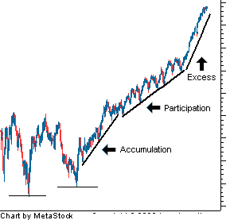 |
| Figure 3: the excess phase |
{kind=link}
Primary Downward Trend (Bear Market)
The Distribution Phase
The first phase in a bear market is known as the distribution phase, the period in which informed buyers sell (distribute) their positions. This is the opposite of the accumulation phase during a bull market in that the informed buyers are now selling into an overbought market instead of buying in an oversold market.
In this phase, overall sentiment continues to be optimistic, with expectations of higher market levels. It is also the phase in which there is continued buying by the last of the investors in the market, especially those who missed the big move but are hoping for a similar one in the near future.
As was the case in the accumulation phase, the distribution phase can be difficult to spot in its early stages. The reason for this is that it may be disguised as a secondary downward trend within the primary upward trend.
From a technical standpoint, the distribution phase is represented by a topping of the market where the price movement starts to flatten as selling pressure increases . The mid to latter stages of the distribution phase will see prices start to fall as more and more investors, anticipating weakness, exit their positions.
A new downward trend will be confirmed when the previous trend fails to make another consecutive higher high and low.
Public Participation Phase
This phase is similar to the public participation phase found in a primary upward trend in that it lasts the longest and will represent the largest part of the move - in this case downward.
During this phase it is clear that the business conditions in the market are getting worse and the sentiment is becoming more negative as time goes on. The market continues to discount the worsening conditions as selling increases and buying dries up.
This is also the point at which most trend followers and technical traders start to dump their positions and take short positions as the new downward trend has confirmed itself.
The Panic Phase
The last phase of the primary downward market tends to be filled with market panic and can lead to very large sell-offs in a very short period of time. In the panic phase, the market is wrought up with negative sentiment, including weak outlooks on companies, the economy and the overall market.
During this phase you will see many investors selling off their stakes in panic. Usually these participants are the ones that just entered the market during the excess phase of the previous run-up in share price.
But just when things start to look their worst is when the accumulation phase of a primary upward trend will begin and the cycle repeats itself. (For related articles, see Profit From Panic Selling and Panic Selling - Capitulation Or Crash?)
Dow Theory: Market Indexes Must Confirm Each Other
By Chad Langager and Casey Murphy, senior analyst of ChartAdvisor.com
Under Dow theory, a major reversal from a bull to a bear market (or vice versa) cannot be signaled unless both indexes (traditionally the Dow Industrial and Rail Averages) are in agreement.
For example, if one index is confirming a new primary uptrend but another index remains in a primary downward trend, it is difficult to assume that a new trend has begun.
The reason for this is that a primary trend, either up or down, is the overall direction of the stock market, which in Dow theory is a reflection of business conditions in the economy. When the stock market is doing well, it is because business conditions are good; when the stock market is doing poorly, it is due to poor business conditions. If the two Dow indexes are in conflict, there is no clear trend in business conditions. (For related reading, see Forces That Move Stock Prices.)
If business conditions cause the major indexes to travel in opposite directions, this disparity suggests that it will be difficult for a primary trend to develop. When trying to confirm a new primary trend, therefore, it's vital that more than one index shows similar signals within a relatively close period of time. If the indexes are in agreement, it is a sign that business conditions are moving in the indicated direction. Thus, rising indexes signal a new uptrend.
Dow Theory: Volume Must Confirm The Trend
According to Dow theory, the main signals for buying and selling are based on the price movements of the indexes. Volume is also used as a secondary indicator to help confirm what the price movement is suggesting. (For more insight, see Volume Oscillator Confirms Price Movements and Gauging Support And Resistance With Price By Volume.)
From this tenet it follows that volume should increase when the price moves in the direction of the trend and decrease when the price moves in the opposite direction of the trend. For example, in an uptrend, volume should increase when the price rises and fall when the price falls. The reason for this is that the uptrend shows strength when volume increases because traders are more willing to buy an asset in the belief that the upward momentum will continue. Low volume during the corrective periods signals that most traders are not willing to close their positions because they believe the momentum of the primary trend will continue.
Conversely, if volume runs counter to the trend, it is a sign of weakness in the existing trend. For example, if the market is in an uptrend but volume is weak on the up move, it is a signal that buying is starting to dissipate. If buyers start to leave the market or turn into sellers, there is little chance that the market will continue its upward trend. The same is true for increased volume on down days, which is an indication that more and more participants are becoming sellers in the market.
According to Dow theory, once a trend has been confirmed by volume, the majority of money in the market should be moving with the trend and not against it.
Dow Theory: Trend Remains In Effect Until Clear Reversal Occurs
The reason for identifying a trend is to determine the overall direction of the market so that trades can be made with the trends and not against them. As was illustrated in the third tenet, trends move from uptrend to downtrend, which makes it important to identify transitions between these two trend directions. (For related reading, see Track Stock Prices With Trendlines.)
In Dow theory, the sixth and final tenet states that a trend remains in effect until the weight of evidence suggests that it has been reversed.
Traders wait for a clear picture of a trend reversal because the goal is not to confuse a true reversal in the primary trend with a secondary trend or brief correction. Remember that a secondary trend is a move in the opposite direction of the primary trend that will not continue. For example, imagine that the primary trend is up, but the indexes are currently selling off. If an investor were to take a short position, concluding that the sell-off is the start of a new primary downward trend, they could get burned when the primary trend continues.
Unless you can safely conclude, based on the weight of evidence, that the trend has changed, you will be trading against the trend. As a general rule, this is not a wise idea, as many have been hurt by trading against the market.
Dow Theory: Dow Theory Specifics
So far, we have discussed a lot of the ideas behind Dow theory along with its main tenets. In this section, we'll take a look at the technical approach behind Dow theory, such as how to identify trend reversals.
Closing Prices and
Charles Dow relied solely on closing prices and was not concerned about the intraday movements of the index. For a trend signal to be formed, the closing price has to signal the trend, not an intraday price movement.
Another feature in Dow theory is the idea of line ranges, also referred to as trading ranges in other areas of technical analysis. These periods of sideways (or horizontal) price movements are seen as a period of consolidation, and traders should wait for the price movement to break the trend line before coming to a conclusion on which way the market is headed. For example, if the price were to move above the line, it's likely that the market will trend up.
Signals and Identification of Trends
One difficult aspect of implementing Dow theory is the accurate identification of trend reversals. Remember, a follower of Dow theory trades with the overall direction of the market, so it is vital that he or she identifies the points at which this direction shifts. (For related reading, see Retracement Or Reversal: Know The Difference.)
One of the main techniques used to identify trend reversals in Dow theory is peak-and-trough analysis. A peak is defined as the highest price of a market movement, while a trough is seen as lowest price of a market movement. Note that Dow theory assumes that the market doesn't move in a straight line but from highs (peaks) to lows (troughs), with the overall moves of the market trending in a direction. (For more on this topic, read Peak-And-Trough Analysis and The Ups And Downs Of Investing In Cyclical Stocks.)
An upward trend in Dow theory is a series of successively higher peaks and higher troughs.
| 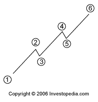 |
| Figure 1: Upward Trend |
{kind=link}
A downward trend is a series of successively lower peaks and lower troughs.

|
| Figure 2: Downward Trend |
The sixth tenet of Dow theory contends that a trend remains in effect until there is a clear sign that the trend has reversed. Much like
A reversal in the primary trend is signaled when the market is unable to create another successive peak and trough in the direction of the primary trend. For an uptrend, a reversal would be signaled by an inability to reach a new high followed by the inability to reach a higher low. In this situation, the market has gone from a period of successively higher highs and lows to successively lower highs and lows, which are the components of a downward primary trend.
| 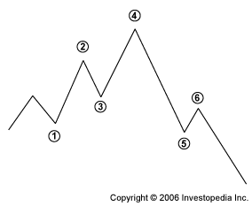 |
| Figure 3: Upward Trend Reversal |
{kind=link}
The reversal of a downward primary trend occurs when the market no longer falls to lower lows and highs. This happens when the market establishes a peak that is higher than the previous peak followed by a trough that is higher than the previous trough, which are the components of an upward trend.
| 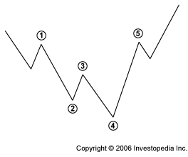 |
| Figure 4: Downward Trend Reversal |
{kind=link}
Dow Theory: Current Relevance
There is little doubt that Dow theory is of major importance in the history of technical analysis. Many of its tenets and ideas are the basis of much of what we know today. Aspects of Dow theory are also incorporated into other theories, such as Elliott Wave theory. (To learn about this concept, see Elliott Wave Theory and Elliott Wave In The 21st Century.)
However, since its original adaptation and subsequent updates, its relevance as a stand-alone analytical technique has weakened. The reason for this has been the advent of more advanced techniques and tools, which in part build off of Dow theory, but greatly expand upon it.
One of the bigger problems with the theory is that followers can miss out on large gains due to the conservative nature of a trend-reversal signal. As we mentioned previously, a signal is confirmed when there is an end to successive highs (uptrend) or lows (downtrend). However, what often happens is that by the time the market has shown a clear sign of reversal, the market has already generated a large gain.
Another problem with Dow theory is that over time, the economy - and the indexes originally used by Dow - has changed. Consequently, the link between them has weakened. For example, the industrial and transportation sectors of the economy are no longer the dominant parts. Technology, for example, now takes up a considerable portion of economic production and growth.
This is important because the basis for watching the indexes is that they are the leading indicators of business conditions. The economy has clearly become more segmented, requiring the analysis of more indexes, which could greatly reduce the accuracy and timeliness of Dow theory analysis. Imagine having to look at six indexes while still adhering to Tenet #4: Indexes Must Confirm Each Other.
Even though there are weaknesses in Dow theory, it will always be important to technical analysis. The ideas of trending markets and peak-and-trough analysis are found constantly within technical writings and ideas. Also of importance in Dow theory is the idea of emotions in the marketplace, which remains a characteristic of market trends.
Charles Dow and Dow theory helped investors improve their understanding of the markets so that they could maker better investments and achieve investment success.
Dow Theory: Conclusion
Dow theory represents the beginning of technical analysis. Understanding this theory should lead you to a better understanding of technical analysis and of an analyst's view of how markets work.
Let's recap what we've learned:
- Dow theory was formulated from a series of Wall Street Journal editorials authored by Charles H. Dow, which reflected Dow's beliefs on how the stock market behaved and how the market could be used to measure the health of the business environment.
- Dow believed that the stock market as a whole was a reliable measure of overall business conditions within the economy and that by analyzing the overall market, one could accurately gauge those conditions and identify the direction of major market trends and the likely direction of individual stocks.
- The market discounts everything.
- Dow theory uses trend analysis to determine which way the market is headed.
- Primary trends are major market trends.
- Secondary trends are corrections of the primary trend.
- Primary trends are made up of three phases. For an upward trend, these phases are: the accumulation phase, the public participation phase and the excess phase. For a downward trend, the three phases are: the distribution phase, the public participation phase and the panic phase.
- Market indexes must confirm each other. In other words, a major reversal from a bull or bear market cannot be signaled unless both indexes (generally the Dow Industrial and Rail Averages) are in agreement.
- Volume must confirm the trend. The indexes are the main signals that indicate a security's movement, but volume is used as a secondary indicator to help confirm what the price movement is suggesting.
- A trend will remain in effect until a clear reversal occurs.
- Dow relied solely on closing prices for determining trends, not intraday price movements.
- Peak-and-trough analysis is a key technique used to identify trends in Dow theory.
- Since the advent of Dow theory, more advanced techniques and tools have expanded on this theory and begun to take its place.
- One problem with Dow theory is that followers can miss out on large gains due to the conservative nature of a trend-reversal signal.
- Another problem with Dow theory is that over time, the economy - and the indexes originally used by Dow - has changed.